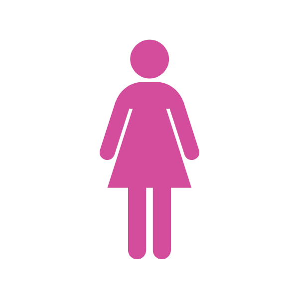

ARGOMENTI ARGOMENTO " Siamo contrari perché francamente ci sembra una presa in giro. Si va a creare la riserva 'panda' per le donne, quando poi nella vita di tutti i giorni non sono messe in condizione di partecipare alla vita politica perché strette nei doveri di madri, mogli, lavoratrici. Non hanno spazi per esprimere le loro potenzialità in movimenti politici, nel sociale, nel volontariato. Per questo stabilire per legge le cosiddette quote rosa ci sembra una grande ipocrisia. Manca una rete sociale che accompagni le donne a poter esprimere la loro personalità anche in campi ulteriori e diversi da quelli della maternità del lavoro e della famiglia. "  Roberta Lombardi Deputata del Movimento Cinque Stelle Intervista rilasciata a Lucia Bigozzi ('Intelligonews') 10 marzo 2014 ARGOMENTO " Nel Parlamento europeo c’è una presenza femminile del 36%, nel Parlamento italiano le donne sono appena il 23%. Questa percentuale ci inserisce al 25esimo posto in una potenziale classifica degli stati membri. Ecco perché il nostro dovere è di non perdere nessuna occasione. Anche il solo parlare di quote rosa dimostra arretratezza: non si tratta di stabilire le solite 'riserve indiane' ma di garantire un sano principio di civiltà. Ma l’Italia sconta un deficit culturale che le ha impedito di garantire un’adeguata rappresentanza di genere sia nelle istituzioni politiche che nel complesso delle posizioni apicali della nostra società. " Rosa Maria Di Giorgi Senatrice del Partito Democratico Intervento al Senato 12 marzo 2014